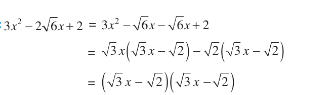
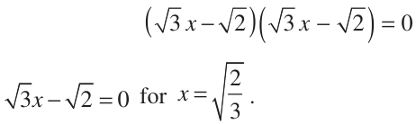
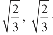

Solution of a Quadratic Equation by Factorisation
LHS of this equation, we get \((2 \times 1^{2}) - (3 \times 1) + 1 = 0 = RHS\) of the equation. We say that 1 is a root of the quadratic equation \(2x^{2} - 3x + 1 = 0\). This also means that 1 is a zero of the quadratic polynomial \(2x^{2} - 3x + 1\). In general, a real number α is called a root of the quadratic equation \(ax^{2} +\) bx \(+ c = 0\), \(a \ne 0\) if \(a α^{2} +\) bα \(+ c = 0\). We also say that \(x =\) α is a solution of the quadratic equation, or that α satisfies the quadratic equation. Note that the
zeroes of the quadratic polynomial \(ax^{2} +\) bx \(+ c\) and the roots of the quadratic
equation \(ax^{2} +\) bx \(+ c = 0\) are the same. You have observed, in Chapter 2, that a quadratic polynomial can have at most two zeroes. So, any quadratic equation can have atmost two roots. You have learnt in Class IX, how to factorise quadratic polynomials by splitting their middle terms. We shall use this knowledge for finding the roots of a quadratic equation. Let us see how.
Example 3 : Find the roots of the equation \(2x^{2} - 5x + 3 = 0\), by factorisation. Solution : Let us first split the middle term \(- 5x\) as \(- 2x - 3x\) [because ( \(- 2x) \times\) ( \(- 3x) =\)
\(6x^{2} = (2x^{2}) \times 3]\).
So, \(2x^{2} - 5x + 3 = 2x^{2} - 2x - 3x + 3 = 2x\) (x \(- 1) - 3(x - 1) = (2x - 3)(x - 1)\)
Now, \(2x^{2} - 5x + 3 = 0\) can be rewritten as \((2x - 3)(x - 1) = 0\). So, the values of x for which \(2x^{2} - 5x + 3 = 0\) are the same for which \((2x - 3)(x - 1) = 0\),
i.e., either \(2x - 3 = 0\) or \(x - 1 = 0\).
Now, \(2x - 3 = 0\) gives \(x = \frac{3}{2}\) and \(x - 1 = 0\) gives \(x = 1\). So, \(x = \frac{3}{2}\) and \(x = 1\) are the solutions of the equation. In other words, 1 and \(\frac{3}{2}\) are the roots of the equation \(2x^{2} - 5x + 3 = 0\). Verify that these are the roots of the given equation.
Note that we have found the roots of \(2x^{2} - 5x + 3 = 0\) by factorising \(2x^{2} - 5x + 3\) into two linear factors and equating each factor to zero.
Example 4 : Find the roots of the quadratic equation \(6x^{2} - x - 2 = 0\). Solution : We have
\(6x^{2} - x - 2 = 6x^{2} + 3x - 4x - 2\)
\(= 3x (2x + 1) - 2 (2x + 1)\)
\(= (3x - 2)(2x + 1)\)
The roots of \(6x^{2} - x - 2 = 0\) are the values of x for which \((3x - 2)(2x + 1) = 0\)
Therefore, \(3x - 2 = 0\) or \(2x + 1 = 0\),
i.e., \(x = \frac{2}{3}\) or \(x = - \frac{1}{2}\)
Therefore, the roots of \(6x^{2} - x - 2 = 0\) are \(\frac{2}{3}\) and \(- 1.2\) We verify the roots, by checking that \(\frac{2}{3}\) and \(- \frac{1}{2}\) satisfy \(6x^{2} - x - 2 = 0\). Example 5 : Find the roots of the quadratic equation \(- + =\) .

Solution : -
So, the roots of the equation are the values of x for which

Now,
So, this root is repeated twice, one for each repeated factor \(3x - 2\) .
Therefore, the roots of \(3x^{2} - 2 6x + 2 = 0\) are .

Example 6 : Find the dimensions of the prayer hall discussed in Section 4.1. Solution : In Section 4.1, we found that if the breadth of the hall is x m, then x satisfies the equation \(2x^{2} + x - 300 = 0\). Applying the factorisation method, we write this equation as
\(2x^{2} - 24x + 25x - 300 = 0\)
2x (x \(- 12) + 25\) (x \(- 12) = 0\)
i.e., (x \(- 12)(2x + 25) = 0\)
So, the roots of the given equation are \(x = 12\) or \(x = - 12.5\). Since x is the breadth of the hall, it cannot be negative.